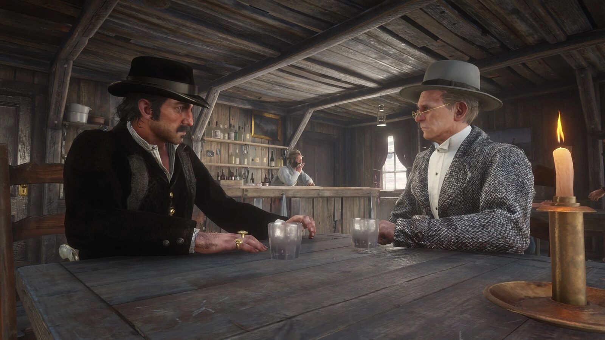
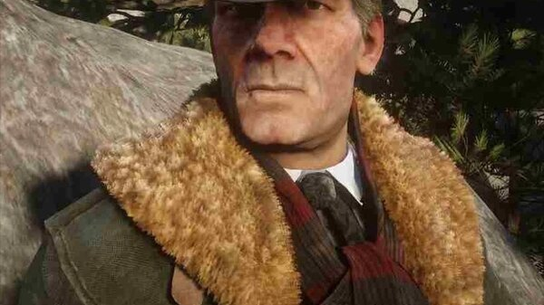
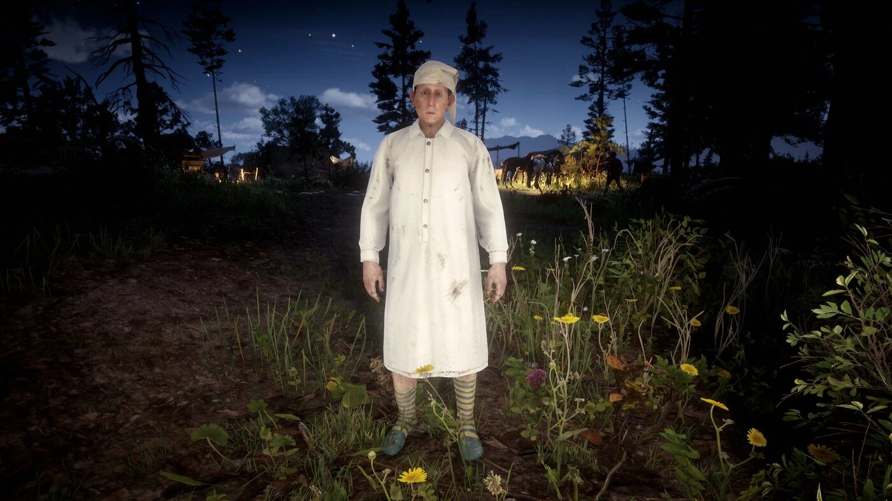

Character · Van der Linde gang
Leopold Strauss
Leopold Strauss is the Van der Linde gang's moneylender and bookkeeper, an Austrian immigrant who manages the gang's finances and runs a loan-sharking operation on the side. Cold and businesslike, he is behind some of the gang's least honourable work.
It is Strauss who sends Arthur Morgan to collect debts from people who cannot pay, including the encounter that infects Arthur with the tuberculosis that eventually kills him.
- Died
- 1899
- Status
- Deceased
- Nationality
- Austrian
- Affiliation
- Van der Linde gang
- Role
- Money lender & bookkeeper
- Games
- Red Dead Redemption 2
Biography
The gang's bookkeeper
Born in Austria and arriving in America by way of Vienna, Strauss handles the gang's money and lends it at interest to desperate locals. In "Money Lending and Other Sins" he hands Arthur a list of debtors to shake down.
The Downes debt
One of those debtors is a sick, broke farmer named Thomas Downes, who coughs blood on Arthur during the collection. That moment, set up by Strauss's ledger, is the source of the tuberculosis that defines the rest of Arthur's story.
Personality
Strauss is calculating, mercenary and indifferent to the suffering his loans cause. He sees people as accounts to be settled, a coldness that eventually disgusts even Arthur.
Relationships

Dutch van der Linde
The leader Strauss serves as financier, funding the gang's plans with interest squeezed from the poor.

Arthur Morgan
The enforcer he sends to collect his debts, and the man who finally turns on him over the harm it causes.

Hosea Matthews
A gang elder who, like Arthur, has little taste for the predatory side of Strauss's money lending.

John Marston
A fellow gang member who shares in the proceeds of, and the unease around, the money Strauss brings in.
Death and fate
Behind the scenes
Strauss appears in Red Dead Redemption 2 (2018). His quiet, paperwork-driven cruelty is one of the game's clearest illustrations of how the gang harms ordinary people.
Trivia
- He is Austrian, originally from Vienna.
- His debt list leads directly to Arthur's tuberculosis.
- Arthur banishes him from the camp near the end.
Gallery
